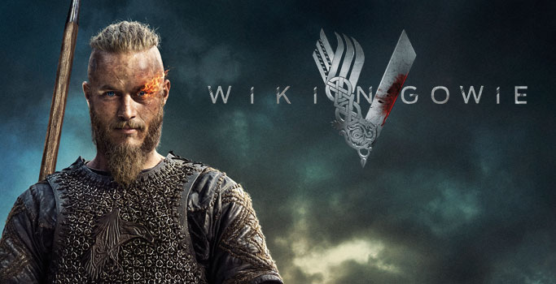

Top 5 seriali - moja ocena
Wikingowie
Kanadyjsko-irlandzki serial telewizyjny stworzony przez Michaela Hirsta dla kanału telewizyjnego History w Kanadzie, który miał swoją premierę 3 marca 2013 roku. Polska premiera pierwszego sezonu odbyła się 21 października 2013 roku na kanale History oraz 1 czerwca 2014 roku na kanale TV Puls. Polska premiera drugiego sezonu odbyła się na kanale History 22 kwietnia 2014 roku, a od 4 listopada 2014 roku emitowana była w TV Puls. Trzeci sezon miał premierę 19 lutego 2015 roku, a Polska premiera trzeciego sezonu odbyła się 30 sierpnia 2015 roku, również na kanale History. Sezon czwarty rozpoczął się 18 lutego 2016 w Ameryce, dzień później premierę miał w Polsce.
Akcja serialu rozgrywa się w Skandynawii u schyłku VIII w. Wiking Ragnar Lodbrok jest sfrustrowany polityką lokalnego jarla Haraldsona, który co roku wysyła wojowników na łupieżcze wyprawy na wschód, który – jak ocenia Lodbrok – jest uboższy, niż ziemie na zachodzie. Prosi szkutnika Flokiego o zbudowanie łodzi, dzięki której udaje im się dopłynąć do Anglii. Ujawniające się zdolności przywódcze i organizacyjne oraz powodzenie pierwszej wyprawy na obce ziemie budzą w panującym jarlu zazdrość, a jednocześnie obawy o własną pozycję i autorytet. Chęć pozbycia się rywala prowadzi go jednak do zguby i ginie w pojedynku z Ragnarem. Ten zaś zajmuje jego miejsce i zostaje jarlem. Jako nieustraszony wojownik jest ucieleśnieniem nordyckiej tradycji i oddania się bogom. Legenda mówi, że jest on bezpośrednim potomkiem Odyna, boga wojny i wojowników.
